1. Click Add button to add perspectiveExtensions extension(org.eclipse.ui.perspectiveExtensions)
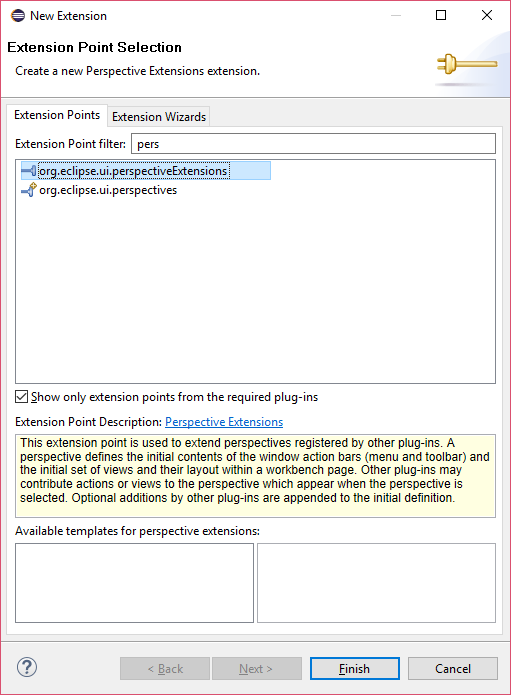2. Set the targetID to "CustomPlugin.perspective" which is created in previous chapter
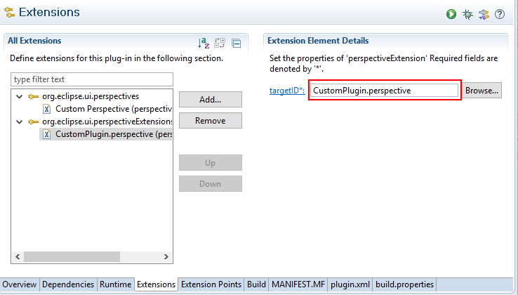3. Add a view to the perspectiveExtension. Here is org.eclipse.jdt.ui.PackageExplorer
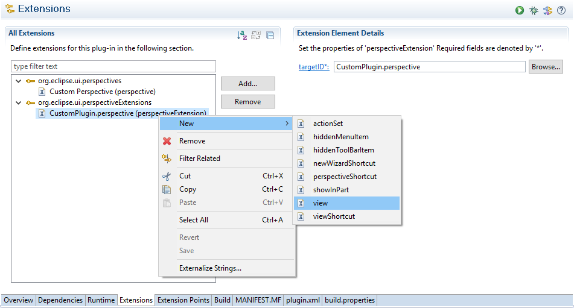4. Set the position of the Package Explorer on the perspective
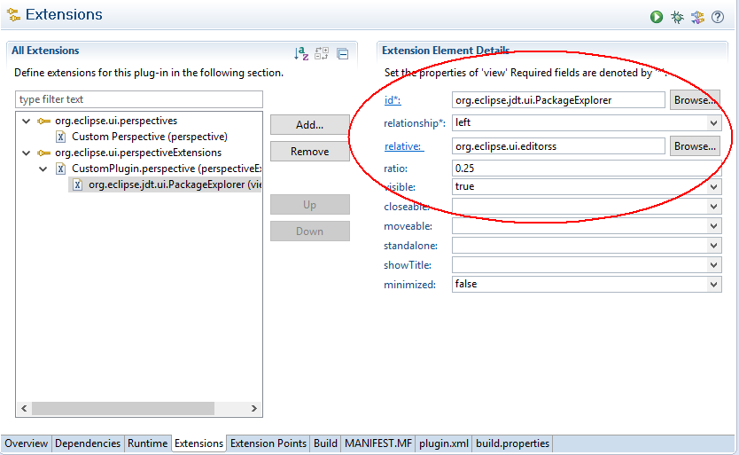- Here are explanations of id, relationship, relative, and radio.
- id: The view id that you want to add on the perspective
- relative: the id of reference view, Generally, the "org.eclipse.ui.editorss" is perspective
- ratio: set the initial size of view
- relationship: the position of the added view with the "relative"
- stack: stack with the "relative" (e.g. Console stack with the Problems view) 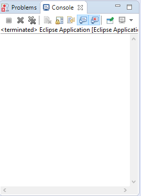
- left and right 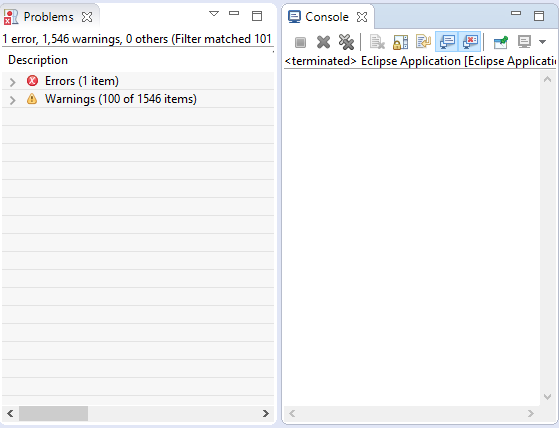
- top and bottom 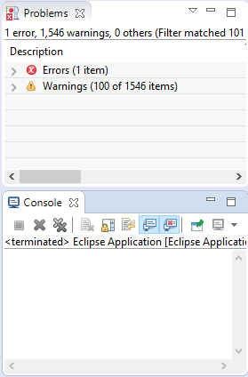
5. Before running the application, please clear the run-time workspace data. You can set in the Run Configurations. In our example, we set the package explorer shown on the left of our perspective and the ratio is 0.25
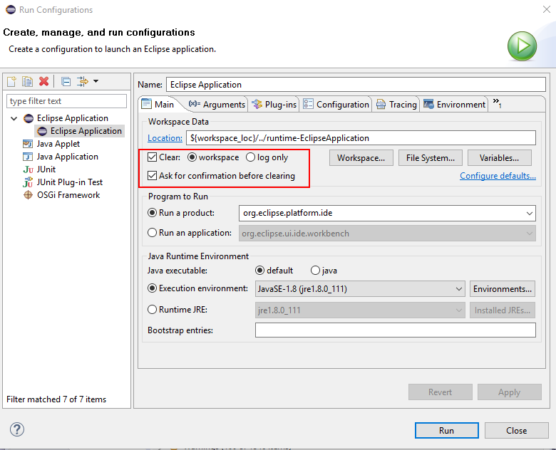6. Result
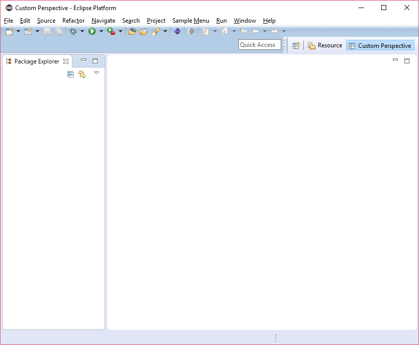7. Add more views
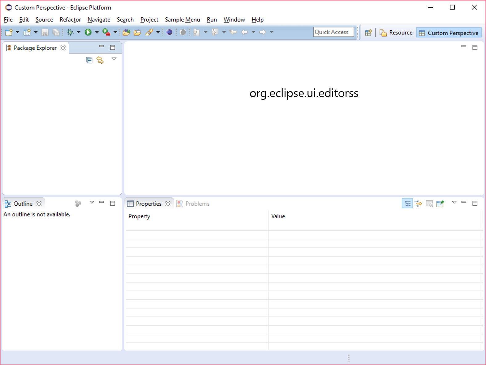8. Corresponding view extensions
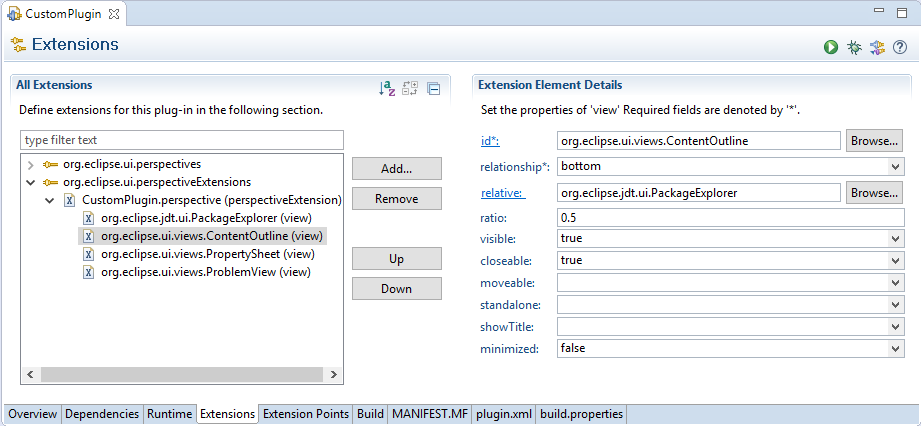Tips: You can add your custom view on the perspective through setting the id of view in perspective extension. For details of creating custom views, please move to the View category.